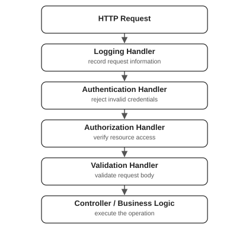

| Approver | Maximum approval amount |
|---|---|
| Team Lead | ₹1,000 |
| Manager | ₹10,000 |
| Director | ₹1,00,000 |
The Chain of Responsibility is a behavioral design pattern that allows a request to pass through a chain of potential handlers, where each handler decides whether to process the request, pass it to the next handler, or stop further processing.
The pattern decouples the sender of a request from its receiver by allowing multiple objects an opportunity to handle the request without the sender needing to know which object will ultimately process it.
Key characteristics:
The pattern follows the principle of loose coupling by separating request initiation from request processing.
Imagine an organization where employees submit expense reimbursement requests.
The company has the following approval hierarchy:
| Approver | Maximum approval amount |
|---|---|
| Team Lead | ₹1,000 |
| Manager | ₹10,000 |
| Director | ₹1,00,000 |
When an employee submits an expense:
The employee doesn't need to know which individual ultimately approves the request.
Chain of Responsibility — Request flow
Each approver handles requests within their authority and delegates larger requests to the next approver.
This is a classic Chain of Responsibility scenario.
The pattern generally involves four components.
| Component | Responsibility |
|---|---|
| Handler | Defines a common interface for handling requests |
| ConcreteHandler | Implements request-processing logic and optionally delegates to the next handler |
| Next Handler | Reference identifying where the request should go next |
| Client | Builds the chain and sends requests to the first handler |
A simplified implementation looks like this:
public abstract class Handler {
protected Handler next;
public Handler setNext(Handler next) {
this.next = next;
return next;
}
public abstract void handle(Request request);
}Each concrete handler usually follows this logic:
@Override
public void handle(Request request) {
if (canHandle(request)) {
process(request);
} else if (next != null) {
next.handle(request);
}
}The client only interacts with the first handler.
Handler first = new HandlerA();
first.setNext(new HandlerB()).setNext(new HandlerC());
first.handle(request);The request flows through the chain until it is handled or reaches the end.
Let's implement the expense approval system using Chain of Responsibility.
Define the request
public record Expense(String employee, long amount) {
public Expense {
if (amount <= 0) {
throw new IllegalArgumentException("Expense amount must be positive");
}
}
}The Expense object represents the request that will travel through the chain.
Create the abstract Handler
public abstract class Approver {
private Approver next;
public Approver setNext(Approver next) {
this.next = next;
return next;
}
public abstract boolean approve(Expense expense);
protected boolean forward(Expense expense) {
if (next != null) return next.approve(expense);
System.out.println("Rejected: No approver has sufficient authority");
return false;
}
}The Approver class provides two important functionalities.
setNext — Connects one handler to another.
lead.setNext(manager);
manager.setNext(director);forward — Delegates the request to the next handler when the current handler cannot process it.
Notice that the abstract class does not know whether the next handler is a Manager, Director, or some other approver.
This ensures loose coupling between the handlers.
Implement concrete handlers
public class TeamLeadApprover extends Approver {
@Override
public boolean approve(Expense expense) {
if (expense.amount() <= 1_000) {
System.out.println("Approved by Team Lead");
return true;
}
return forward(expense);
}
}public class ManagerApprover extends Approver {
@Override
public boolean approve(Expense expense) {
if (expense.amount() <= 10_000) {
System.out.println("Approved by Manager");
return true;
}
return forward(expense);
}
}public class DirectorApprover extends Approver {
@Override
public boolean approve(Expense expense) {
if (expense.amount() <= 100_000) {
System.out.println("Approved by Director");
return true;
}
return forward(expense);
}
}Each handler only knows its own approval limit and how to forward a request.
Build the chain and process requests
void main(String[] args) {
Approver lead = new TeamLeadApprover();
Approver manager = new ManagerApprover();
Approver director = new DirectorApprover();
lead.setNext(manager).setNext(director); # Build the chain
lead.approve(new Expense("Alice", 500)); # Client communicates only with first handler
lead.approve(new Expense("Bob", 5_000));
lead.approve(new Expense("Charlie", 50_000));
lead.approve(new Expense("David", 250_000));
}Output:
Approved by Team Lead
Approved by Manager
Approved by Director
Rejected: No approver has sufficient authorityUnderstand the execution
Suppose Bob submits an expense of ₹5,000.
TeamLeadApprover receives ₹5,000ManagerApprover receives ₹5,000Why is this better than using if-else
Without Chain of Responsibility, we might write:
public void approve(Expense expense) {
long amount = expense.amount();
if (amount <= 1_000) {
System.out.println("Approved by Team Lead");
} else if (amount <= 10_000) {
System.out.println("Approved by Manager");
} else if (amount <= 100_000) {
System.out.println("Approved by Director");
} else {
System.out.println("Rejected");
}
}This is perfectly acceptable for a small, fixed hierarchy.
But imagine a more complex system where approvals depend on departments, expense types, regional rules, compliance checks, and different authorization limits.
With a large conditional structure, all that logic can become tightly coupled inside one method.
With Chain of Responsibility, you can introduce a new handler:
public class VicePresidentApprover extends Approver {
@Override
public boolean approve(Expense expense) {
if (expense.amount() <= 1_000_000) {
System.out.println("Approved by Vice President");
return true;
}
return forward(expense);
}
}Then extend the existing chain:
Approver vp = new VicePresidentApprover();
lead.setNext(manager).setNext(director).setNext(vp);No changes are required to the existing TeamLeadApprover, ManagerApprover, or DirectorApprover implementations.
This demonstrates the Open/Closed Principle: existing handler implementations remain unchanged while the system is extended with new behavior.
This is an especially important application of Chain of Responsibility in backend development.
Consider an API server that receives HTTP requests.
Before executing the business logic, every request may pass through multiple processing stages:
Unlike the expense approval example, multiple handlers can process the same request.
An authentication handler may successfully authenticate the request and still pass it to the authorization handler.
API middleware chain

Any middleware can terminate the chain early, for example by returning HTTP 401 or 403.
Define Request and Response
public record HttpRequest(String path, String token, String body) {}
public record HttpResponse(int status, String message) {}Define the Handler interface
public interface HttpHandler {
HttpResponse handle(HttpRequest request);
}Every handler implements the same interface.
Logging Handler
public class LoggingHandler implements HttpHandler {
private HttpHandler next;
public LoggingHandler(HttpHandler next) {
this.next = next;
}
@Override
public HttpResponse handle(HttpRequest request) {
System.out.println("Request: " + request.path());
HttpResponse response = next.handle(request);
System.out.println("Response: " + response.status());
return response;
}
}Notice something important:
HttpResponse response = next.handle(request);This forwards the request to the next handler.
The logging handler performs some work before forwarding the request, then performs additional work after the downstream handlers return.
This is useful for request logging, timing, tracing, and collecting performance metrics.
Authentication Handler
public class AuthenticationHandler implements HttpHandler {
private HttpHandler next;
public AuthenticationHandler(HttpHandler next) {
this.next = next;
}
@Override
public HttpResponse handle(HttpRequest request) {
String token = request.token();
if (!"user-token".equals(token) && !"admin-token".equals(token)) {
return new HttpResponse(401, "Unauthorized: Invalid token");
}
return next.handle(request);
}
}If authentication fails, the handler returns 401 immediately.
The remaining handlers are never executed.
The hard-coded tokens are only for demonstrating request flow; production applications should use proper authentication and verified identities.
Authorization Handler
public class AuthorizationHandler implements HttpHandler {
private HttpHandler next;
public AuthorizationHandler(HttpHandler next) {
this.next = next;
}
@Override
public HttpResponse handle(HttpRequest request) {
boolean adminResource = request.path().equals("/admin/dashboard");
boolean isAdmin = "admin-token".equals(request.token());
if (adminResource && !isAdmin) {
return new HttpResponse(403, "Forbidden: Admin access required");
}
return next.handle(request);
}
}Authentication checks who the user is.
Authorization checks what that user is permitted to access.
In a production application, authorization would use a trusted identity and roles established by the authentication system, not raw token-string comparisons.
Request Validation Handler
public class ValidationHandler implements HttpHandler {
private HttpHandler next;
public ValidationHandler(HttpHandler next) {
this.next = next;
}
@Override
public HttpResponse handle(HttpRequest request) {
if (request.body() == null || request.body().length() > 100) {
return new HttpResponse(400, "Invalid request body");
}
return next.handle(request);
}
}Here, validation ensures that the request body is present and does not exceed 100 characters.
Final Business Logic Handler
public class ControllerHandler implements HttpHandler {
@Override
public HttpResponse handle(HttpRequest request) {
return new HttpResponse(200, "Successfully processed " + request.path());
}
}This is the terminal handler.
It performs the actual business operation rather than forwarding the request to another handler.
Build and execute the middleware chain
void main(String[] args) {
HttpHandler chain = new LoggingHandler(new AuthenticationHandler(new AuthorizationHandler(
new ValidationHandler(new ControllerHandler()))));
HttpRequest request = new HttpRequest("/orders", "user-token", "Create order");
HttpResponse response = chain.handle(request);
System.out.println(response.message());
}Output:
Request: /orders
Response: 200
Successfully processed /ordersDifferent request scenarios
| Request | Result | Handler that stops processing |
|---|---|---|
Valid user requests /orders | 200 OK | Controller |
| Invalid token | 401 Unauthorized | Authentication |
Regular user accesses /admin/dashboard | 403 Forbidden | Authorization |
| Request body exceeds 100 characters | 400 Bad Request | Validation |
This is a practical example of a request-processing pipeline with short-circuiting.
The request passes through multiple handlers, each responsible for a distinct concern. The chain stops whenever a handler decides that processing should not continue.
Consider a logging system that routes messages based on severity.
Unlike the expense approval example, a request may be processed by multiple handlers, with each handler continuing to the next.
public enum LogLevel {
INFO, WARN, ERROR
}
public record LogHandler(LogLevel minimumLevel, Consumer<String> action, LogHandler next) {
public void log(LogLevel level, String message) {
if (level.ordinal() >= minimumLevel.ordinal()) action.accept(message);
if (next != null) next.log(level, message);
}
}
void main(String[] args) {
LogHandler chain = new LogHandler(LogLevel.INFO, msg -> System.out.println("Console: " + msg),
new LogHandler(LogLevel.WARN, msg -> System.out.println("File: " + msg),
new LogHandler(LogLevel.ERROR, msg -> System.out.println("Alert: " + msg), null)));
chain.log(LogLevel.INFO, "Application started");
chain.log(LogLevel.ERROR, "Database connection failed");
}Output:
Console: Application started
Console: Database connection failed
File: Database connection failed
Alert: Database connection failedIn this simplified example, the file and alert handlers print placeholder messages. In a real application, their actions would write to a file or call an alerting service.
The important distinction is that the chain continues even after a handler processes the message.
There are two commonly used variations.
First matching handler
Only Handler B processes the request. Handler C is skipped.
Processing pipeline
All three handlers process the request and continue forwarding.
| Aspect | First matching handler | Processing pipeline |
|---|---|---|
| Number of handlers processing | Typically one | Potentially multiple |
| Forwarding | Only when not handled | Usually continues unless stopped |
| Common examples | Approval, support escalation | HTTP middleware, logging |
| Termination | After successful handling | After final stage or early rejection |
Both follow the Chain of Responsibility idea because processing decisions are distributed across connected handlers.
Several Java frameworks use chain-based request processing.
Servlet Filters
Java Servlet filters are a particularly close example.
public class LoggingFilter implements Filter {
@Override
public void doFilter(ServletRequest request, ServletResponse response, FilterChain chain) throws IOException, ServletException {
System.out.println("Before request");
chain.doFilter(request, response);
System.out.println("After request");
}
}The important line is:
chain.doFilter(request, response);This delegates the request to the next filter or, eventually, the destination servlet.
If a filter does not invoke chain.doFilter() then normal downstream processing stops.
Other examples include Spring Security filter chains, middleware pipelines, request interceptors, and some event-processing systems.
Chain of Responsibility can look similar to Decorator, Strategy, and Command patterns.
| Pattern | Primary purpose |
|---|---|
| Chain of Responsibility | Pass a request through potential handlers until processing is complete or stopped |
| Decorator | Add responsibilities or behavior around an object |
| Strategy | Choose an interchangeable algorithm |
| Command | Encapsulate a request or operation as an object |
Chain of Responsibility vs Decorator
Both may involve objects holding references to other objects with the same interface.
The key difference is their intent.
A Decorator primarily extends behavior, usually by delegating to a wrapped object while adding functionality.
A Chain of Responsibility handler decides whether and how processing should continue.
In practice, middleware implementations can exhibit characteristics of both patterns.
Chain of Responsibility vs Strategy
Strategy chooses an algorithm for a task, usually based on a configured strategy reference.
Chain of Responsibility distributes the processing decision among multiple linked handlers.
For example, choosing whether to pay using a credit card or UPI could use Strategy. Routing an expense through approval authorities could use Chain of Responsibility.
| Advantages | Disadvantages |
|---|---|
| Reduces coupling between request sender and handlers | The request may reach the end without being handled |
| Supports Single Responsibility Principle | Debugging a long chain can be difficult |
| Allows adding new handlers without changing existing handler logic | Handler ordering can affect results |
| Supports Open/Closed Principle | Can introduce unnecessary complexity for simple conditions |
| Enables flexible processing pipelines | A poorly designed chain can accidentally skip handlers |
Important implementation considerations
Typical applications include approval workflows, exception-handling hierarchies, help-desk escalation, authentication pipelines, logging systems, and request validation.
However, if you only have a few simple, fixed conditions, a straightforward if-else or switch may be easier to understand and maintain.
The Chain of Responsibility pattern organizes request processing into a sequence of independently responsible handlers. The fundamental operation is:
if (canHandle(request)) {
process(request);
} else if (next != null) {
next.handle(request);
}In middleware-style chains, the handler may process the request and then continue forwarding it rather than choosing between the two.
The central idea is that the client sends a request to the beginning of the chain, while the handlers collectively determine how far it travels and what processing occurs.
This makes the pattern especially useful for extensible approval systems, request-processing middleware, security filters, and other workflows where responsibilities must be separated into modular stages.